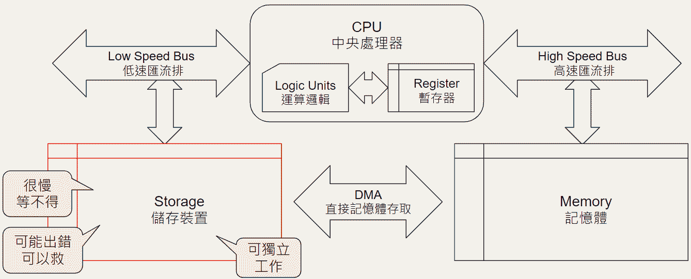
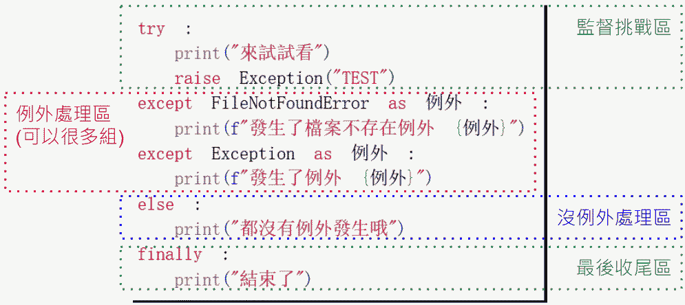
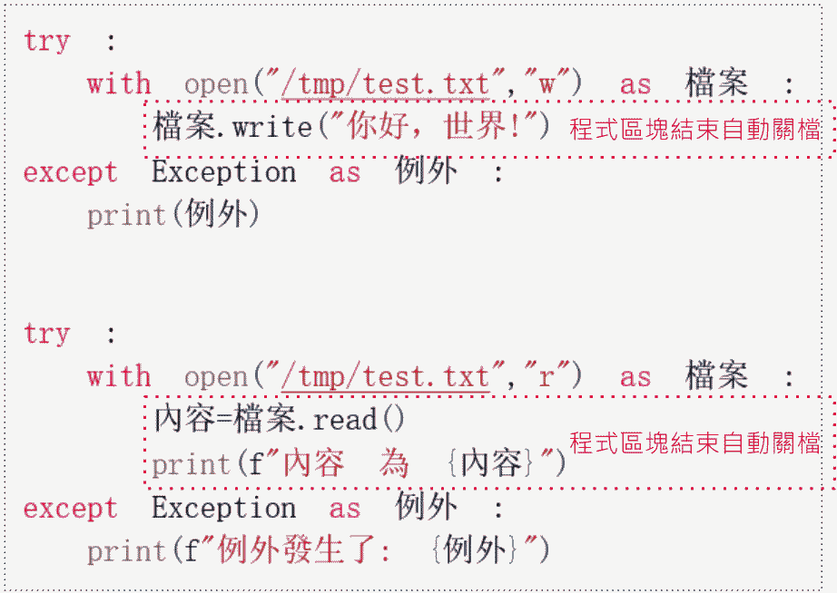
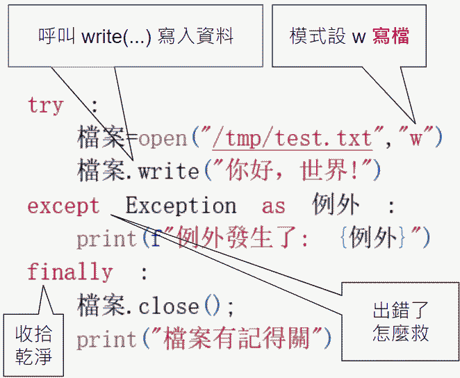
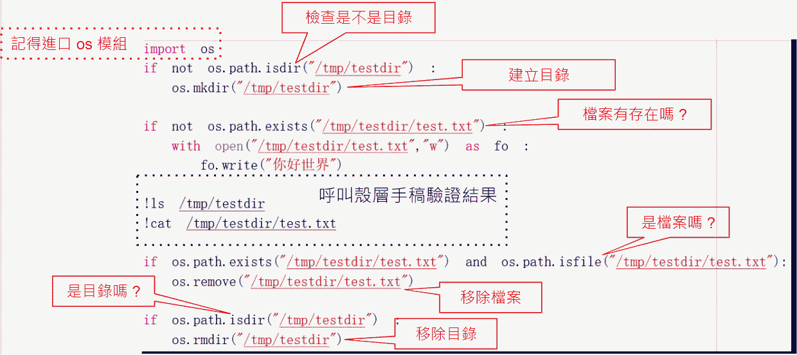

🐍 Python 函數參數的類型 (Parameters in Python)
Python 參數主要可以根據傳遞方式（位置或名稱）和數量（固定或可變）來區分。
| 基本參數類型 | ||
|---|---|---|
| 可變長度參數 | ||
| 僅限傳遞方式的參數 | ||
必填的位置參數 (Positional-or-Keyword)
範例： def greet(name, message):
print(f"Hello, {name}! {message}")
# 兩種呼叫方式都有效
greet("Alice", "Good morning.") # 位置傳遞 (按順序)
greet(message="How are you?", name="Bob") # 關鍵字傳遞 (按名稱)
|
||
具有預設值的參數 (Default Arguments)
範例： def power(base, exponent=2): # exponent 有預設值 2
return base ** exponent
result1 = power(3) # 呼叫時省略 exponent，使用預設值 2 (3**2 = 9)
result2 = power(3, 4) # 呼叫時提供 exponent，覆蓋預設值 (3**4 = 81)
|
||
位置參數集合 (*args)
|
||
關鍵字參數集合 (**kwargs)
|
||
僅限位置參數 (Positional-Only Parameters)
|
||
僅限關鍵字參數 (Keyword-Only Parameters)
|
||
📋 總結：函數參數的完整順序
在 Python 的函數定義中，所有類型的參數必須按照以下嚴格的順序出現：
- 僅限位置參數 (Positional-Only)
- 位置或關鍵字參數 (Positional-or-Keyword, 無預設值)
- 位置或關鍵字參數 (Positional-or-Keyword, 有預設值)
- 單星號分隔符 (*) 或 *args (用來標記後面的參數為僅限關鍵字)
- 僅限關鍵字參數 (Keyword-Only)
- 雙星號字典 (**kwargs)
完整範例：
def full_example(
pos1, pos2, /, pos_or_kwd, default_val=10,
*args, kwd_only1, kwd_only2=20, **kwargs
):
pass
學生們正在參加學校的活動之夜。下列函式會告訴學生該前往何處參加活動:
請問哪兩個是正確的 ？
def roomAssignment (student, year) :
"""Assign rooms to students"""
if year == 1:
print(f'\n{student.title()}, please report to room 115')
elif year == 2:
print(f'\n{student.title()}, please report to room 210')
elif year == 3:
print(f'\n{student.title()}, please report to room 320')
elif year == 4:
print(f'\n{student.title()}, please report to room 405')
elif year == 5:
print(f'\n{student.title()}, please report to room 515')
else:
print(f'\n{student.title()}, please report to room 625')
name = input('What is your name?')
grade=0
while grade not in (1,2,3,4,5,6):
grade = int(input('What grade are you in (1-6)?'))
roomAssignment(name,year=grade)
name = input('What is your name?')
grade=0
while grade not in (1,2,3,4,5,6):
grade = int(input('What grade are you in (1-6)?'))
roomAssignment(student,year)
roomAssignment('Sherlock Sassafrass',4)
roomAssignment(year=6,name='Minnie George')
請檢閱下列程式。
def petStore(category, species, breed = 'none'):
"""Display information about a pet."""
print(f'\nYou have selected an animal from the {category} category.')
if breed == 'none':
print(f'The {category} you selected is a {species}')
else:
print(f'The {category} you selected is a {species} {breed}')
print(f'\nThe {category} would make a great pet!')
category = input('What animal category are you interested in?')
species = input('What species are they from (canine, feline, Scarlet Macaw, Blue and Gold Macaw?')
if category == 'dog' or category =='cat':
breed = input('What breed are you interested in?')
petStore(category, species, breed)
else:
petStore(category, species)
petStore(breed='Maltese',species='Canine', category='dog')
petStore('bird',species='Scarlet Macaw')
01
02
03
04
05
06
07
08
09
10
11
12
13
14
15
16
17
18
02
03
04
05
06
07
08
09
10
11
12
13
14
15
16
17
18
此函式(petStore)會傳回一個值。
正確
錯誤
第14和17行的函式呼叫無效。
正確
錯誤
第16和18行的函式呼叫會產生錯誤
正確
錯誤
下列函式會計算使用指數之運算式的值。
def calc_power(a, b):
return a**b
base = input('Enter the number for the base:')
exponent = input('Enter the number for the exponent:')
result = calc_power(base, exponent)
print('The result is ' + result)
01
02
03
04
05
06
02
03
04
05
06
該程式碼將在第 03 行和第 04 行產生錯誤。
| 正確 | 錯誤 |
|---|
該程式碼將在第 02 行和第 05 行產生錯誤。
| 正確 | 錯誤 |
|---|
程式碼將正確地將資料輸出到控制台。
| 正確 | 錯誤 |
|---|
您正在撰寫一個函式來增加遊戲內的玩家分數，此函式具有下列需求:
- 如果沒有針對points指定任何值,則points的起始值為一。
- 如果bonus為True,則points必須加倍。
def increment_score(score, bonus, points):
if bonus == True:
points = points * 2
score = score + points
return score
points = 5
score = 10
new_score = increment_score(score, True, points)
01
02
03
04
05
06
07
08
02
03
04
05
06
07
08
為了符合需求,您必須將第01行變更為:
def increment_score(score, bonus, points =1):
正確
錯誤
以預設值定義任何參數之後,右側的所有參數也必須使用預設值來定義。
正確
錯誤
如果您不變更第01行,而且僅使用兩個參數來呼叫此函式,第三個參數的值將為None。
正確
錯誤
第03行也會修改在第06行宣告之變數points的值。
| 正確 | 錯誤 |
|---|
對於下列每一項有關以下函式的敘述,請選取[正確]或[錯誤]。
def grosspay(hours=40,rate=25,pieces=0,piecerate=0,salary=0):
overtime=0
if pieces > 0:
return pieces * piecerate
if salary > 0:
pass
if hours > 40:
overtime = (hours-40) * (1.5 * rate)
return overtime + (40 * rate)
else:
return hours * rate
grosspay()的函式呼叫會產生語法錯誤。
正確
錯誤
grosspay(salary=50000)的函式呼叫不會傳回任何結果。
正確
錯誤
grosspay(pieces=500, piecerate=4)的函式呼叫所傳回的結果為2000。
正確
錯誤
某間自行車公司正在建立一個程式,讓客戶能夠記錄騎乘英里數。
此程式會根據客戶所記錄的英里數傳送訊息。
此程式會根據客戶所記錄的英里數傳送訊息。
點擊展開
def get_name():
def get_name(biker):
def get_name(name):
name = input("What is your name? ")
return name
點擊展開
def get_calories():
def get_calories(miles, burn_rate):
def get_calories(miles, calories_per_mile):
calories = miles * calories_per_mile
return calories
distance = int(input("How many miles did you bike this week? "))
burn_rate = 50
biker=get_name()
calories_burned = calc_calories(distance, burn_rate)
print(biker, ", you burned about ", calories_burned, " calories.")
請問哪些字元代表文件字串的開頭和結尾?
單引號(')
雙引號(")
兩個雙引號("")
三個雙引號(""")
在記錄函式時,文件字串的標準位置在哪裡?
在程式檔案的開頭
在函式上方
緊湊在函式標頭後面
在函式的結尾
在程式檔案的結尾
請檢閱下列函式:
請問哪個命令可列印文件字串?
def cube(n):
""" Returns the cube of number n """
return n*n*n
print(__doc__)
print(cube(doc))
print(cube.__doc__)
print(cube(docstring))
💻 模組: random
| 函式 參數 |
功能 範例 |
|---|---|
| randint (n1, n2) |
由 n1 到 n2 之間隨機取得一個整數
7 ← r.randint(1, 10)
|
| randrange (n1, n2, n3) |
由 n1 到 n2 之間每隔 n3 的隨機數取得一個整數
8 ← r.randrange(0, 11, 2)
|
| uniform (f1, f2) |
由 f1 到 f2 之間隨機取得一個浮點數
6.351865... ← r.uniform(1, 10)
|
| random () |
由 0 到 1 之間隨機取得一個浮點數
0.893398... ← r.random()
|
| choice ( 字串 ) |
由字串中隨機取得一個字元
'b' ← r.choice('abcdef') |
| sample ( 字串, n) |
由字串中隨機取得 n 個字元
['c', 'a', 'd'] ← r.sample(str1, 3)
|
| shuffle ( 串列 ) |
為串列洗牌
['ef', 'ab', 'cd'] ← r.shuffle(['ab','cd','ef'])
|
您正在撰寫程式碼來產生一個最小值5與最大值11的隨機整數。
請問您應該使用哪兩個函式?
請問您應該使用哪兩個函式?
random.randint(5, 12)
random.randrange(5, 12, 1)
random.randint(5, 11)
random.randrange(5, 11, 1)
您正在撰寫一個程式來隨機指派房間(room_number)和團隊建立組別(group)以進行公司培訓活動。
import random
roomsAssigned=[1]
room_number=1
groupList=["Ropes","Rafting","Obstacle","Wellness"]
count=0
print("Welcome to CompanyPro's Team-Building Weekend!")
name=input("Please enter your name (q to quit)? ")
while name != 'q' and count < 50:
while room_number in roomsAssigned:
點擊展開
room_number=random(1,50)
room_number=random.randint(1,50)
room_number=random.shuffle(1,50)
room_number=random.random(1,50)
print(f"{name}, your room number is {room_number}")
roomsAssigned.append(room_number)
點擊展開
group = random.choice(groupList)
group = random.randange(groupList)
group = random.shuffle(groupList)
group = random.sample(groupList)
print(f"You will meet with the {group} Group this afternoon. ")
count+=1
name=input("Please enter your name (Q to quit)? ")
您任職於某個遊戲開發團隊。
您需要撰寫程式碼來產生符合下列需求的隨機數字:
- 此數字是5的倍數。
- 最低數字是5。
- 最高數字是100。
請問哪兩個程式碼片段將符合需求? 每個正確答案都是一個完整的解決方案。
from random import randrange
print(randrange(0, 100, 5))
from random import randint
print(randint(1, 20) * 5)
from random import randrange
print(randrange(5, 105, 5))
from random import randint
print(randint(0, 20) * 5)
📅 Python datetime 模組常用方法
Python 的 datetime 模組主要包含了 date、time、datetime、timedelta 和 tzinfo 幾個核心類別。
以下表格著重於在程式設計中最常用到的 datetime 類別方法。
| 類別/方法 參數 |
說明 | 範例 輸出結果 |
|---|---|---|
| datetime.now() 無 |
取得當前的本地日期和時間。 | dt = datetime.now() 2025-12-09 14:10:56.123456 |
| datetime.strptime() string, format |
將字串依指定格式解析成 datetime 物件。 | dt = datetime.strptime("2025/12/09 14:10", "%Y/%m/%d %H:%M") 2025-12-09 14:10:00 |
| .strftime() format |
將 datetime 物件格式化為字串輸出。 | dt = datetime(2025, 12, 9, 14, 10) dt.strftime("%Y年%m月%d日") 2025年12月09日 |
| .date() 無 |
從 datetime 物件中取出日期部分 (回傳 date 物件)。 | dt = datetime.now() dt.date() 2025-12-09 |
| .time() 無 |
從 datetime 物件中取出時間部分 (回傳 time 物件)。 | dt = datetime.now() dt.time() 14:10:56.123456 |
| .weekday() 無 |
回傳星期幾，週一為 0，週日為 6。 | dt = datetime(2025, 12, 9) (週二) dt.weekday() 1 |
| .isoweekday() 無 |
回傳星期幾，週一為 1，週日為 7。 | dt = datetime(2025, 12, 9) (週二) dt.isoweekday() 2 |
| timedelta days, hours, etc. |
時間差計算。用於加減日期時間。 | dt1 = datetime(2025, 12, 9) td = timedelta(days=7) dt2 = dt1 + td 2025-12-16 00:00:00 |
📅 DateTime Format Codes
| 類別 | 代碼 | 意義 | 範例輸出 |
|---|---|---|---|
| 年份 | %Y | 帶世紀的年份 | 2025 |
| %y | 不帶世紀的年份 (00-99) | 25 | |
| 月份 | %m | 月份，帶零填充的數字 (01-12) | 12 |
| %B | 月份的全稱 (依地區設定而定) | December | |
| %b | 月份的縮寫名稱 (依地區設定而定) | Dec | |
| 日 | %d | 月份中的日期，帶零填充的數字 (01-31) | 03 |
| %j | 年份中的第幾天，帶零填充的數字 (001-366) | 337 | |
| %A | 星期幾的全稱 (依地區設定而定) | Wednesday | |
| %a | 星期幾的縮寫名稱 (依地區設定而定) | Wed | |
| %w | 星期幾的數字 (0=星期日 到 6=星期六) | 3 | |
| 小時 | %H | 小時 (24 小時制)，帶零填充的數字 (00-23) | 17 |
| %I | 小時 (12 小時制)，帶零填充的數字 (01-12) | 05 | |
| 分鐘 | %M | 分鐘，帶零填充的數字 (00-59) | 52 |
| 秒數 | %S | 秒數，帶零填充的數字 (00-61，包括閏秒) | 17 |
| %f | 微秒，作為小數點數字 (000000-999999) | 000000 (如果未提供) | |
| 上午/下午 | %p | 地區設定中上午或下午的表示 | PM |
| 時區 | %z | 時區偏移量 (例如，-0500, +0800) | -0600 (對於 CST) |
| %Z | 時區名稱 (依地區設定而定) | CST (對於 Central Standard Time) | |
| 組合 | %c | 地區設定中合適的日期和時間表示 | Wed Dec 3 17:52:17 2025 |
| %x | 地區設定中合適的日期表示 | 12/03/25 | |
| %X | 地區設定中合適的時間表示 | 17:52:17 | |
| %r | 12 小時制時間 (等同於 %I:%M:%S %p) | 05:52:17 PM | |
| %T | 24 小時制時間 (等同於 %H:%M:%S) | 17:52:17 | |
| 特殊 | %% | 字面上的百分比符號 | % |
請問下列程式執行後將輸出什麼 ?
import datetime
d = datetime.datetime(2017, 4, 7)
print( '{:%B-%d-%y}'.format(d) )
04-07-17
2017-APRIL-07
APRIL-07-17
04-07-2017
您正在撰寫一個程式來顯示 My Healthy Delivery 的特價優惠。
import datetime
dailySpecials= ( "Spaghetti", "Macaroni & Cheese", "Meatloaf", "Fried Chicken" )
weekendSpecials=( "Lobster", "Prime Rib", "Parmesan-Crusted Cod" )
# 擷取目前的日期。
點擊展開
now=datetime()
now=datetime.date()
now=datetime.datetime.now()
now=new date()
# 擷取工作日(即星期幾)的完整名稱。
點擊展開
today=now.strftime("%A")
today=now.strftime("%B")
today=now.strftime("%W")
today=now.strftime("%Y")
print("My Healthy Eats Delivery")
if today == "Friday" or today=="Saturday" or today =="Sunday":
print("The weekend specials include:")
for item in weekendSpecials:
print(item)
else:
print("The weekday specials include: ")
for item in dailySpecials:
print(item)
# 計算當週剩餘天數。
點擊展開
dayleft=now-now.weekday()
dayleft=today-today.weekday()
dayleft=6-now.weekday()
dayleft=6-datetime.datetime.weekday()
print(f"Pricing specials change in {daysLeft} days")
類別 Class
import datetime
class TradeLogger:
def __init__(self, symbol: str, strategy_name: str):
self.symbol = symbol
self.strategy_name = strategy_name
self.filename = f"{symbol}_{datetime.date.today()}.log"
self.file = None
## Context Manager Protocol ##
def __enter__(self):
"""進入 with 區塊時觸發：執行開檔動作"""
print(f"[系統訊號] 正在開啟日誌檔: {self.filename}")
self.file = open(self.filename, "a", encoding="utf-8")
return self # 回傳物件本身給 'as' 後面的變數
def __exit__(self, exc_type, exc_val, exc_tb):
"""離開 with 區塊時觸發：執行關檔動作"""
if self.file:
self.file.close()
print(f"[系統訊號] 檔案 {self.filename} 已安全關閉。")
# 如果有異常發生，可以在這裡處理 (exc_type 為異常類型)
## String Representation (字串表示法) ##
def __repr__(self):
"""
供開發者偵錯使用。
慣例上回傳一個「能用來重新建立該物件」的字串。 """
供開發者偵錯使用。
慣例上回傳一個「能用來重新建立該物件」的字串。 """
return f"TradeLogger(symbol='{self.symbol}', strategy_name='{self.strategy_name}')"
def log_trade(self, side: str, price: float, volume: int):
"""模擬寫入交易紀錄"""
timestamp = datetime.datetime.now().strftime("%H:%M:%S")
record = f"[{timestamp}] {side} | {price} | {volume} units\n"
self.file.write(record)
print(f"紀錄已寫入: {record.strip()}")
# --- 實際應用範例 ---
if __name__ == "__main__":
# 使用 with 關鍵字自動管理資源
with TradeLogger("TSMC", "MA_Cross") as logger:
# 進行交易寫入
logger.log_trade("BUY", 605.0, 1000)
# 示範使用 format 與 !r (呼叫 __repr__)
# 在金融報表或 Debug Log 中非常實用
print("\n--- 格式化輸出展示 ---")
print("當前 logger 狀態: {!r}".format(logger))
print(f"Debug 資訊 (f-string): {logger!r}")
周邊裝置架構

存取流程

- open close 必須成對出現，否則會產生占用系統資源的垃圾。
例外處理

With

| r | 讀取模式，指標會置於開頭。(預設) |
|---|---|
| w | 寫入模式，不存在時建立，存在時會被覆寫。 |
| a | 附加模式，不存在時建立，存在時會加入到尾端。 |
| r+ | 讀寫模式，指標會置於開頭。 |
| w+ | 讀寫模式，不存在時建立，存在時會被覆寫。 |
| a+ | 讀寫模式，不存在時建立，存在時會加入到尾端。 |
讀檔

| EOF(End of File) 檔案結尾 |
讀到空字串 “” | readline() == “” |
|---|---|---|
| New Line 空白行 |
只讀到一個換行符號 “\n” | readline() == “\n” |
寫檔

完整的檔案處理

程式執行引數 與 回傳值
Script.py 檔案包含下列程式碼：
import sys
print(sys.argv[2])
您執行下列命令：
python Script.py Cheese Bacon Bread
請問此命令的輸出為何？
Bread
Cheese
Script.py
Bacon
裝置: 終端機
- 輸入：
input(prompt)讀取一行字串（含結尾換行去除） - 輸出：
print(*values, sep=' ', end='\n')將物件轉成字串後印出 - 注意：
input()回傳一律是str，需要自行轉型
name = input('請輸入姓名：')
age = int(input('年齡：')) # 以 int 轉型
print(f'{name} 您好，今年 {age} 歲。')
input() 基本參數
input()
input('請問如何稱呼: ')
print() 基本參數
print(10, 20, 30) # 預設 sep=' ', end='\n'
print(10, 20, 30, sep=' | ')
print("沒有換行", end=""); print("接在後面")
請問下列陳述式有何功能？
data = input()
顯示電腦上的所有輸入周邊裝置
顯示允許使用者輸入的訊息方塊
允許使用者在主控台中輸入文字
建立HTML輸入元素
在 Python 程式中，如果希望使用者輸入時，即使用輸入了小數，程式也能自動轉為整數來進行運算。
你應該使用以下哪個程式碼片段 ？
total = input('請輸入總數？')
total = int(eval(input('請輸入總數？')))
total = str(input('請輸入總數？'))
total = float(input('請輸入總數？'))
型別轉換
input(...) 回傳的資料型態為字串，必須進行必要的型別轉換後才能進行運算。print(...) 引數的資料型態為字串，必須先轉換成字串才能輸出。# 讀取三種資料，並做適當轉型
from datetime import datetime
price = float(input('收盤價：'))
shares = int(input('股數：'))
trade_date = datetime.strptime(input('交易日(YYYY-MM-DD)：'), '%Y-%m-%d')
print(price, shares, trade_date)
int(s)、float(s)：轉數值；bool(s)以「是否為空字串」判斷 （bool('0')仍為True）datetime.strptime(text, fmt)：字串→日期時間- 建議先
.strip()去除空白，再轉型；必要時try/except防呆
三種格式化方式：總覽
| 方法 | 語法 | 特色 |
|---|---|---|
f'...{expr:spec}...' |
Python 3.6+，最直覺；可內嵌運算 (如 {x*1.05:.2f}) |
可讀性佳、效能佳；推薦 |
'...{0:spec}...'.format(x) |
較通用；可重複/具名參數 | 舊專案常見 |
'...%f' % x |
C 風格；符號如 %d、%f |
相容舊碼；不建議新碼首選 |
f-strings
x = 1234.5
print(f'市價：{x:,.2f}')
dt = datetime(2025, 10, 15, 9, 30)
print(f'時間：{dt:%Y-%m-%d %H:%M}')
str.format()
'市價：{0:,.2f} 股數：{1:d}'.format(1234.5, 3000)
舊式 %
'市價：%,.2f 股數：%d' % (1234.5, 3000)
str() vs repr()
str(obj)：給人看的「友善」字串repr(obj)：給程式/除錯看的「精確」表示，常含引號、跳脫
print(str(`Hello
World`))# 兩行
World`))# 兩行
print(repr(`Hello
World`))# 'Hello\nWorld'
World`))# 'Hello\nWorld'
格式規格字（Spec）常用表
| 類別 | Spec/格式 | 說明 | 範例 |
|---|---|---|---|
| 整數 | d、b、o、x/X |
十進位/二/八/十六進位 | f'{255:d} {255:x}' → 255 ff |
| 浮點 | f、e/E、g/G |
小數/科學記號/自動 | f'{3.14159:.2f}' → 3.14 |
| 千分位 | , |
加千分位分隔 | f'{1234567:,}' → 1,234,567 |
| 寬度/對齊 | {:<10}、{:^10}、{:>10} |
左/置中/右對齊；可搭配填充字元如 {:_>10} |
f'|{42:<5}|{42:^5}|{42:>5}|' |
| 符號 | +、-、 |
顯示正負號/只有負號/正留空白 | f'{3:+d} {3:-d} {3: d}' → +3 3␠3 |
| 百分比 | % |
乘以 100 並加 % 號 | f'{0.0765:.2%}' → 7.65% |
| repr | !r |
使用 repr(obj) 的顯示（含轉義） |
f'{'A\nB'!r}' → 'A\nB' |
日期時間格式化常用表
| 符號 | 意義 | 範例 |
|---|---|---|
%Y | 四位數年份 | 2025 |
%m / %d | 月 / 日（零填充） | 10 / 05 |
%H %M %S | 時 分 秒（24h） | 09 30 00 |
%b / %B | 英文月縮寫 / 全名 | Oct / October |
%a / %A | 星期縮寫 / 全名 | Wed / Wednesday |
%z / %Z | 時區數值 / 名稱 | +0800 / CST |
ISO | dt.isoformat() | 2025-10-15T09:30:00+08:00 |
from datetime import datetime, timezone, timedelta
dt = datetime.now()
print(dt.strftime('%Y/%m/%d %H:%M'))
print(f'ISO: {dt.isoformat()}')
例外處理
try:
txt = input("請輸入價格：").strip().replace(",", "")
price = float(txt)
print(f'價格為 {price:.2f}')
except ValueError:
print('格式錯誤，請輸入數字。如：1234.56')
常見錯誤與除錯
ValueError：輸入無法轉成指定型別 → 提示格式、加入try/exceptTypeError：None或型別不符 → 在格式化前先is None檢查- 字串格式錯誤 → 善用
repr()看見跳脫字元 - 輸出對齊混亂 → 使用寬度與對齊規格（如
{:>10}）
對於下列每一項有關 try 陳述式的敘述，請選取 [正確] 或 [錯誤]。
try 陳述式可以包含一個或多個 except 子句。
正確
錯誤
try 陳述式可以包含 finally 子句，但不含 except 子句。
正確
錯誤
try 陳述式可以包含 finally 子句以及 except 子句。
正確
錯誤
try 陳述式可以包含一個或多個 finally 子句。
正確
錯誤
您需要撰寫執行下列工作的程式碼:
- 呼叫process()函式。
- 如果process()函式擲回錯誤,則呼叫logError()函式。
- 呼叫process()函式之後一律呼叫displayResult()函式。
點擊展開
:
assert
except
finally
raise
try
process()
點擊展開
:
assert
except
finally
raise
try
logError()
點擊展開
:
assert
except
finally
raise
try
displayResult()
您正在建立一個接受使用者輸入的程式。此程式必須將輸入轉型為整數，並且在無法轉型時正確處理錯誤。
while True:
點擊展開
:
try
else
except
raise
finally
x = int(input(“Please enter a number: “))
break
點擊展開
ValueError :
try
else
except
raise
finally
print("Not a valid number. Try again...")
單元測試 Unit Test

您為了要測試某個物件是否為特定類別的執行個體。撰寫了下列程式
點擊展開
unittest
define
import
include
using
class TestIsInstance(
點擊展開
) :
unittest.TestCase
test.TestCase
TestCase.unittest
TestCase.test
def
點擊展開
:
assert_isInstance(self)
eval_isInstance(self)
test_isInstance(self)
try_isInstance(self)
點擊展開
self.assertIsInstance(obj, cls, msg=None)
test.assertIsInstance(obj, cls, msg=None)
this.assertIsInstance(obj, cls, msg=None)
if __name__ == '__main__':
unittest.main()
請從每個下拉式清單中選取正確的選項以完成有關assert方法的敘述。
若要測試變數a與b的值是否相同,請使用:
assertEqual(a,b)
assertTrue(x)
assertIs(a,b)
assertIn(a,b)
若要測試物件a與b是否相同,請使用:
assertEqual(a,b)
assertTrue(x)
assertIs(a,b)
assertIn(a,b)
若要測試清單中是否存在某個值,請使用:
assertEqual(a,b)
assertTrue(x)
assertIs(a,b)
assertIn(a,b)
裝置: 檔案系統
執行下列程式，卻收到第03行的錯誤。請問造成此錯誤的原因是什麼?
def read_file(file) :
line = None
if os.path.isfile(file) :
data = open(file, r)
for line in data :
print(line)
01
02
03
04
05
06
06
02
03
04
05
06
06
path 方法不存在 os 物件中。
isfile 方法不接受單一參數。
isfile 方法不存在 path 物件中。
您需要匯入 os 程式庫。
您正在為學校開發一個 Python 應用程式。
此應用程式必須讀取並寫入資料至文字檔案。
如果檔案不存在,此應用程式就必須建立檔案。
如果檔案含有內容,此應用程式就必須刪除內容。
請問您應該使用哪個程式碼片段?
open('local_data', 'w+')
open('local_data', 'r')
open('local_data', 'r+')
open('local_data', 'w')
某間公司需要有人協助更新他們的檔案系統。
您必須建立一個執行下列動作的簡易檔案操作程式：
- 使用指定的名稱建立檔案。
- 將'End of listing'這段片語附加至檔案。
import os
file =
點擊展開
open('myFile.txt','w')
open('myFile.txt','a')
點擊展開
("End of listing")
file.write
file.add
file.close()
您正在撰寫一個處理檔案的函式函式。
您需要確保此函式會在檔案不存在時傳回None。
如果檔案存在,此函式必須傳回第一行。
您撰寫了以下這段程式碼:
import os
def get_first_line(filename, mode):
return file.readline()
return None
with open(filename, 'r') as file:
else:
if os.path.isfile(filename):
您撰寫了以下這段程式碼:
out.txt檔案不存在。
您執行程式碼。
import sys
try:
file_in = open('in.txt', 'r')
file_out = open('out.txt', 'w+')
except IOError:
print('cannot open', file_name)
else:
i = 1
for line in file_in:
print(line.rstrip())
file_out.write('line ' + str(i) + ': ' + line)
i = i + 1
file_in.close()
file_out.close()
請問以下哪一項敘述是正確的?
此程式碼將正確執行,不會發生錯誤。
此程式碼將執行,但會產生邏輯錯誤。
此程式碼將產生執行階段錯誤。
此程式碼將產生語法錯誤。
若 in.txt 不存在，例外處理時 file_name 為發生引用錯誤
否則可以正常執行無誤
某間公司需要有人協助更新他們的檔案系統。您必須建立一個執行下列動作的簡易檔案操作程式:
- 查看檔案是否存在
- 如果檔案存在,則顯示其內容。
import os
if
點擊展開
isfile('myFile.txt'):
os.exist('myFile.txt'):
os.find('myFile.txt):
os.path.isfile('myFile.txt'):
file = open('myFile.txt)
點擊展開
output('myFile.txt')
print(file.get('myFile.txt'))
print(file.read())
print('myFile.txt')
file.close()
請檢閱下列程式碼片段：
f = open('python.txt', 'a')
f.write('This is a line of text.')
f.close()
如果名稱為 python.txt 的檔案不存在，就會建立此檔案。
正確
錯誤
此檔案中的資料會被覆寫。
正確
錯誤
其他程式碼可以在這段程式碼執行完畢之後，開啟此檔案。
正確
錯誤
Concurrency and Parallelism 併發與平行運算
在 Python 中，多執行緒 (Multi-threading)、多處理程序 (Multiprocessing) 和 非同步 I/O (Asynchronous I/O) 都是實現高效率程式碼執行的重要機制，但它們在處理 併發 (Concurrency) 和 平行運算 (Parallelism) 的方式上有所不同。
理解它們的差異，特別是與 Python 的 全域解釋器鎖 (GIL) 之間的關係，是選擇正確工具的關鍵。
Multi-threading (多執行緒)
功能與原理
- 目標： 實現並發 (Concurrency)。
- 模型： 搶佔式多工 (Preemptive Multitasking)。
- 工作方式： 在單一處理程序內建立多個執行緒。執行緒共享記憶體空間。作業系統決定何時切換執行緒。
- 與 GIL 的關係： Python 的 GIL 限制了在任何給定時間，只有一個執行緒可以執行 Python 位元碼。
- I/O 密集型任務： 當執行緒執行 I/O 操作（例如等待網路回應或檔案讀寫）時，它會釋放 GIL，讓其他執行緒有機會執行 Python 程式碼。因此，執行緒適合 I/O 密集型任務，因為可以「重疊」 I/O 的等待時間。
- CPU 密集型任務： 由於 GIL 存在，多執行緒無法利用多核 CPU 實現真正的平行運算，效能提升有限，甚至可能因為頻繁的執行緒切換而降低效能。
優缺點
| 優點 (Advantages) | 缺點 (Disadvantages) | |
|---|---|---|
| 適用性 | 適用於 I/O 密集型 任務。 | 不適用於 CPU 密集型 任務 (受 GIL 限制)。 |
| 記憶體 | 執行緒共享記憶體，資料傳遞容易。 | 共享記憶體容易導致資料競爭，需使用鎖等同步機制，增加複雜性。 |
| 資源/啟動 | 執行緒是「輕量級」的，啟動開銷較小。 | 頻繁的上下文切換 (Context Switching) 仍有開銷。 |
Multiprocessing 多處理程序 (多進程)
功能與原理
- 目標： 實現真正的平行運算 (Parallelism)。
- 模型： 搶佔式多工 (Preemptive Multitasking)。
- 工作方式： 建立多個獨立的處理程序。每個處理程序有自己的 Python 解釋器和獨立的記憶體空間。作業系統將這些處理程序分配到不同的 CPU 核心上同時執行。
- 與 GIL 的關係： 每個處理程序都有自己的 GIL。因此，不同的處理程序可以同時在不同的 CPU 核心上執行 Python 位元碼，從而繞開 GIL 的限制。
優缺點
| 優點 (Advantages) | 缺點 (Disadvantages) | |
|---|---|---|
| 適用性 | 適用於 CPU 密集型 任務，可充分利用多核 CPU。 | 不適合 I/O 密集型，開銷大於執行緒或非同步。 |
| 隔離性 | 記憶體獨立，沒有 GIL 限制。 | 資料傳遞複雜，需要使用程序間通訊 (IPC) 機制（例如 Queue 或 Pipe），開銷較大。 |
| 穩定性 | 一個處理程序崩潰不會影響其他處理程序。 | |
| 資源/啟動 | 處理程序是「重量級」的，啟動和切換開銷大。 | 消耗較多的系統資源。 |
Asynchronous I/O (非同步 I/O)
功能與原理
- 目標： 實現高效的並發 (Concurrency)。
- 模型： 協作式多工 (Cooperative Multitasking)。
- 工作方式： 基於單一執行緒和事件迴圈 (Event Loop)。程式碼使用 async/await 關鍵字來定義協程 (Coroutines)。當一個協程遇到 await 並且需要等待 I/O 完成時，它會主動將控制權交還給事件迴圈，讓事件迴圈切換到其他已準備好的任務。
- 與 GIL 的關係： 單執行緒模型，因此與 GIL 不衝突，並且沒有執行緒切換的開銷。其效率來自於避免在 I/O 等待時閒置 CPU。
優缺點
| 優點 (Advantages) | 缺點 (Disadvantages) | |
|---|---|---|
| 適用性 | 最適合高併發的 I/O 密集型 任務（如網路服務器、大量網路爬蟲）。 | 不適用於 CPU 密集型 任務 (會阻塞整個事件迴圈)。 |
| 資源/擴展性 | 協程是極為「輕量級」的，可以輕鬆啟動數萬個任務。 | 僅適用於使用支援 async/await 的非阻塞型 I/O 函式庫。 |
| 複雜度 | 避免了執行緒/程序中的鎖定問題。 | 程式碼需要使用 async/await 語法，具有非同步傳染性，可能需重寫部分同步程式碼。 |
總結比較
| 特性 (Feature) | Multi-threading | Multiprocessing | Asynchronous I/O |
|---|---|---|---|
| 主要目標 | 並發 (Concurrency) | 平行運算 (Parallelism) | 並發 (Concurrency) |
| 核心單元 | 執行緒 (Thread) | 處理程序 (Process) | 協程 (Coroutine/Task) |
| GIL 影響 | 限制 CPU 密集型效能 | 繞過 GIL，實現真正平行 | 無影響 (單執行緒) |
| 適用場景 | I/O 密集型 (中低併發) | CPU 密集型 | I/O 密集型 (高併發) |
| 記憶體 | 共享記憶體 | 獨立記憶體 | 共享記憶體 (單執行緒) |
| 開銷 | 中等 (啟動、切換) | 高 (啟動、IPC) | 低 (協程切換) |
| 程式碼風格 | 傳統同步程式碼 | 傳統同步程式碼 | 需使用 async/await 關鍵字 |
Networking 網路
GPIO - General Purpose Input/Output 通用目的資料輸出入
以 Raspberry PI Zero 為例
I2C - Inter-Integrated Circuit 內部整合電路 (I平方C)
以 Raspberry PI Zero 為例
SPI - Serial Peripheral Interface Bus (序列周邊介面)
以 Raspberry PI Zero 為例